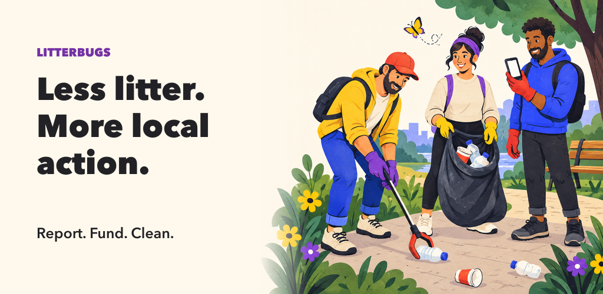
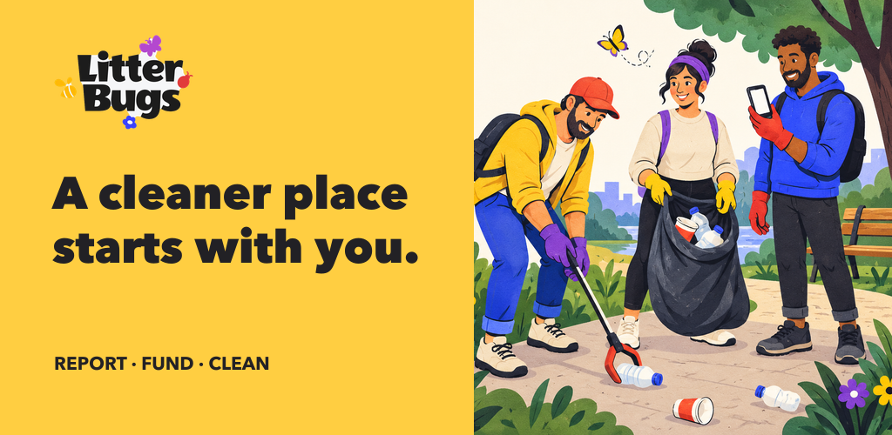
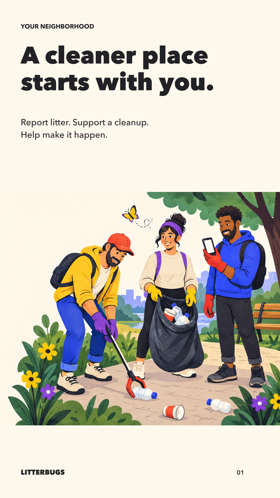
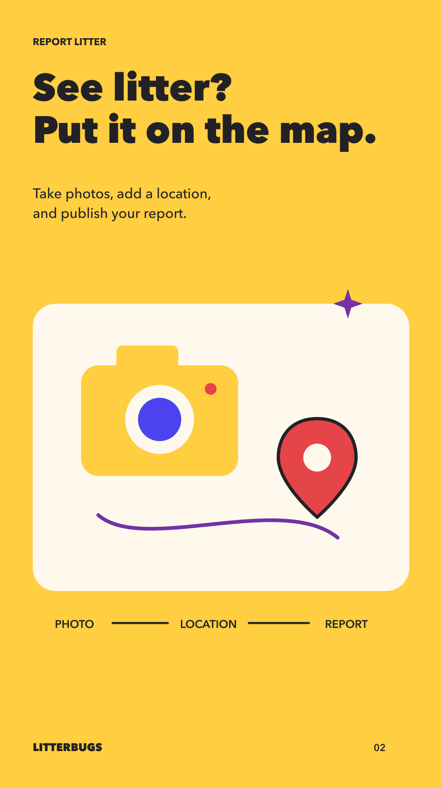
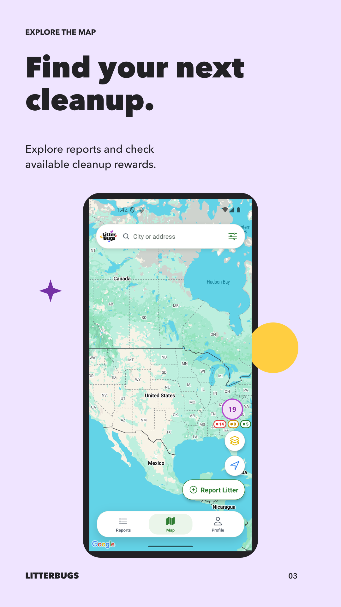
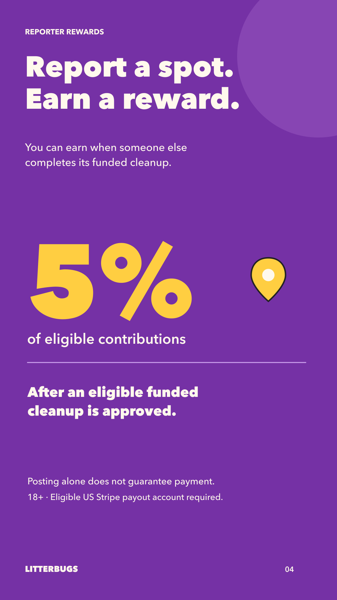
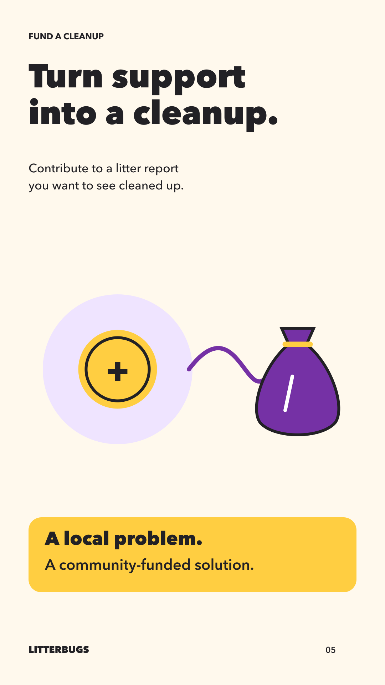
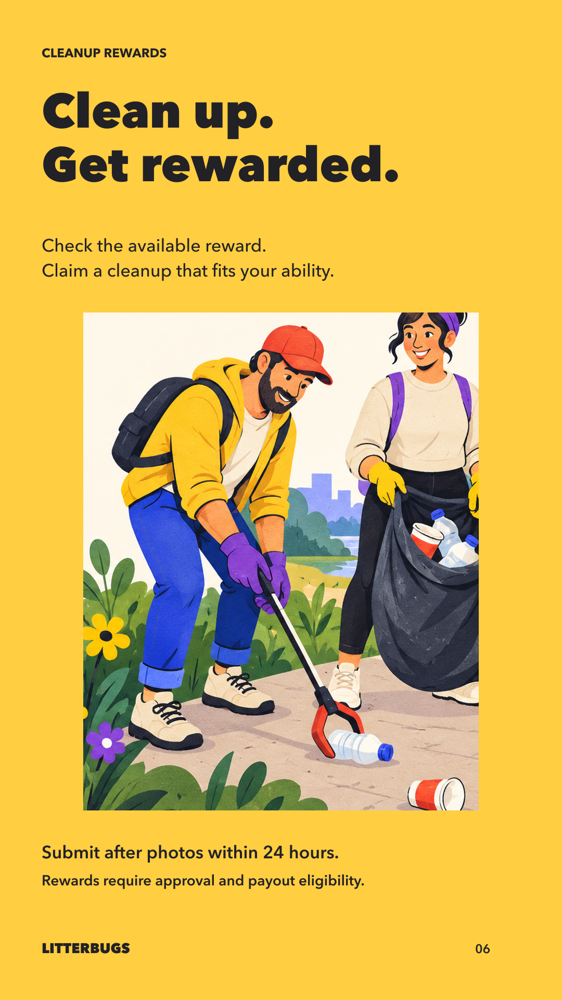
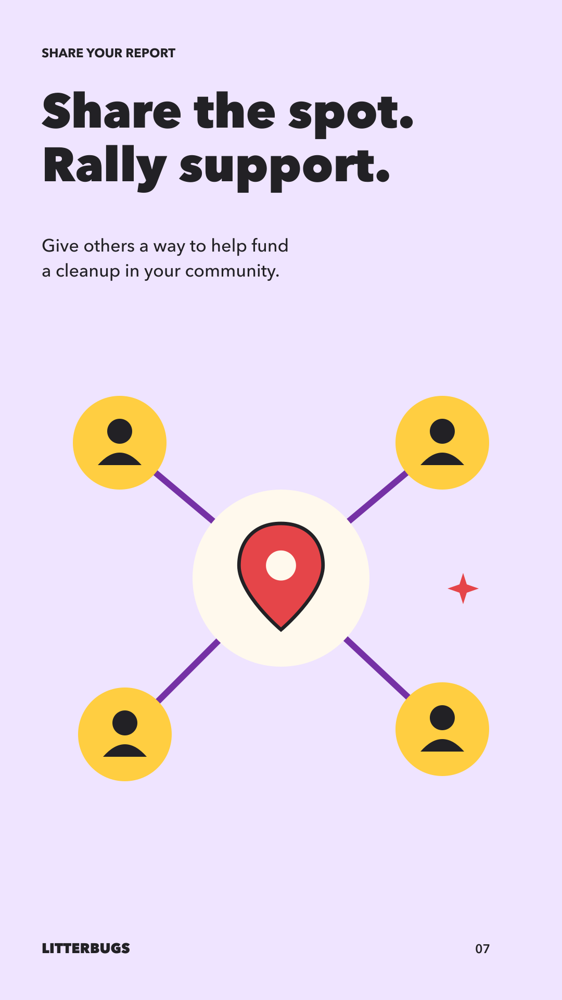
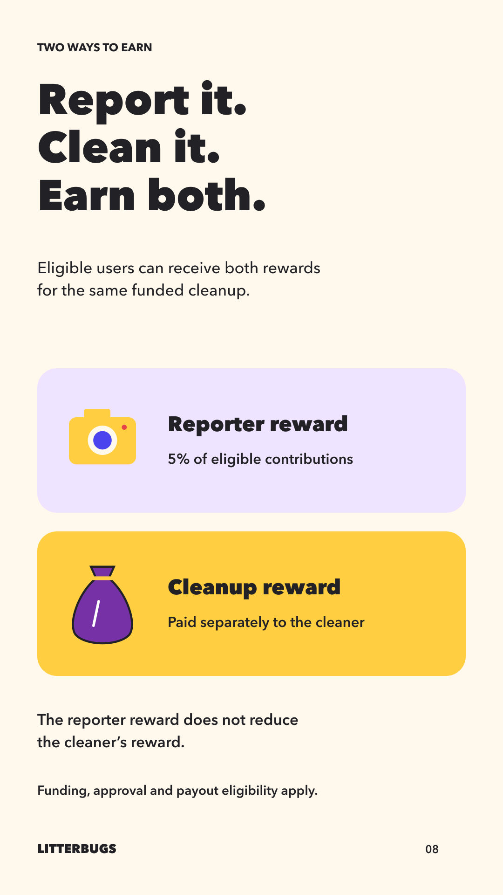

Eight coordinated story panels and two feature-graphic treatments. Warm ivory, yellow and purple replace the pale green outer backgrounds. This is a creative review, not the final screenshot pack: the map uses an existing native release verification capture; additional current Android screens are still needed to balance the illustrated panels.










Litterati combines angled phone views, benefit headlines and illustrations. Too Good To Go uses photography, bold typography and trailer storytelling. Neither needs a feature banner made only from screenshots. These are visual observations, not conversion-performance claims.
Google’s guidance distinguishes the experience-led feature graphic from actual app screenshots. The final gallery should keep real current UI prominent; four or more 1080×1920 actual-experience images support promotional formats. Eight graphic-only panels would be a poor final substitute.
Released Android 2.0.1 (21): report creation; local reports with useful public content; funded cleanup detail; reporter earnings without private data; report sharing. Preserve original UI and avoid synthetic payout/test states.
28-second silent captioned storyboard. This is an editorial draft; current app footage is still needed.
25–30 seconds: neighborhood problem → capture and locate litter → share and fund → safe cleanup and after photos → approved rewards → brand close. Use captions throughout. Opening illustration can animate lightly, followed by real current app footage. Export 1920×1080, then upload to YouTube before adding its URL to Play Console. No upload or listing change has been made.